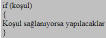
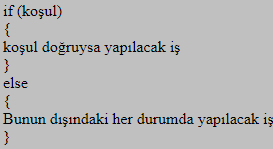
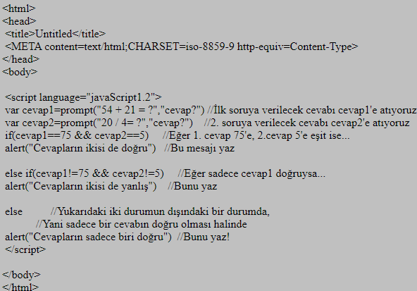

JavaScript ile program yazarken program akışının her zaman yukarıdan aşağıya olmasını istemeyebiliriz. Bu durumda koşul ifadeleri devreye girer. Bu ifadelerle browser'a programın bir noktasında bir koşul belirtip, bu koşul doğruysa bir iş yapmasını, doğru değilse başka bir iş yapmasını söyleyebiliriz. Ya da daha karmaşık durumlar tanımlayabiliriz. Bütün bu işleri koşul ifadeleri 'if' ve 'else' 'i yerinde kullanarak başarabiliriz.
If ifadesi, eğer verilen koşul doğruysa true, değilse false değerini verir. Aşağıda if'in kullanımını görüyorsunuz.

If ifadesiyle bir veye birkaç koşul belirttiğimizde, oluşabilecek bir durum da bu koşul veya koşullardan hiçbirinin gerçeklenmemesidir. İşte bu durumu else ifadesiyle belirtiriz. Yani if ile browser'a 'verdiğim koşul doğruysa şunu yap', else ifadesiyle 'aksi takdirde şunu yap' deriz.
If ve else ifadelerinin kullanımları aşağıdaki gibidir.

Eğer birden fazla koşul belirtmek istersek ilk if'den sora else if ifadesini kullabilir ve bu koşullarda yapılacak işleri belirleyebiliriz. Bunun anlamı şudur: 'Eğer(if) a şartı gerçekleniyorsa şunu yap, bunun dışında(else if) eğer b şartı gerçekleniyorsa şunu yap,bunların dışındaki durunmlarda(else) şunu yap!' .Bu durumda else ifadesi verilen koşulların hiçbirinin gerçeklenmediği durumları kapsar. Bu karışık ifadeyi ve koşul yapısını aşağıdaki örneğe bakarak anlayabilirsiniz...

Bu örnekte, tanımda kullandığımız küme parantezlerini '{}' kullanmadık. Bunun nedeni koşul doğruysa yapılacak tek bir iş vermemizdir. Bu durumda JavaScript bu işin hemen üstündeki if'e ait olduğunu anlar. Fakat koşul doğruysa birden fazla iş yaptıracaksak bunları küme parantezleri içinde vermemiz gerekir.